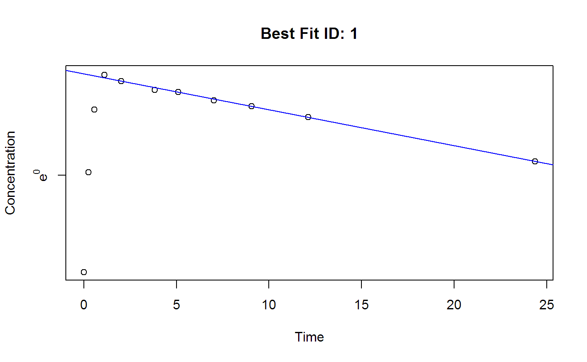
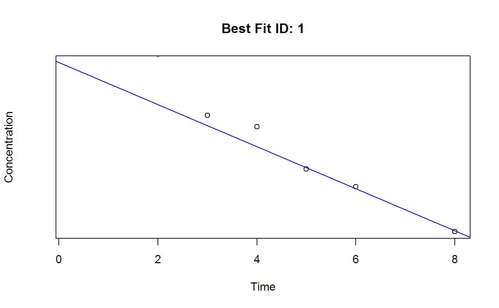

Automatically select best fit slope for the given x(usually time) and log(y)(usually concentration) values.
plotFit(concData, id, Time, conc, mol = "", adm = "Extravascular", ID = "", Mol = "")
| concData | name of data table containing time-concentration data of multiple subjects |
|---|---|
| id | column name for subject ID |
| Time | column name for the time |
| conc | column name for the concentration |
| mol | column name for molecular species |
| adm | one of |
| ID | Subject ID for this plot |
| Mol | the name of molecular species to see |
Find the best fit slope then plot it.
Currently this function uses ordinary least square method(OLS) only.
This function calles BestSlope function.
R-squared
adjusted R-squared
number of points used for slope
negative of slope, lambda_z
intercept of regression line
correlation of log(y) and x
earliest x for lambda_z
last x for lambda_z
predicted y value at last point, predicted concentration for the last time point
plotFit(Theoph, "Subject", "Time", "conc", ID="1")#> R2 R2ADJ LAMZNPT LAMZ b0 CORRXY LAMZLL #> 0.9999997 0.9999995 3.0000000 0.0484570 2.3687851 -0.9999999 9.0500000 #> LAMZUL CLSTP #> 24.3700000 3.2801465plotFit(Indometh, "Subject", "time", "conc", adm="Bolus", ID="1")#> R2 R2ADJ LAMZNPT LAMZ b0 CORRXY #> 0.99706673 0.99413345 3.00000000 0.15832048 -1.72421060 -0.99853229 #> LAMZLL LAMZUL CLSTP #> 5.00000000 8.00000000 0.05024851